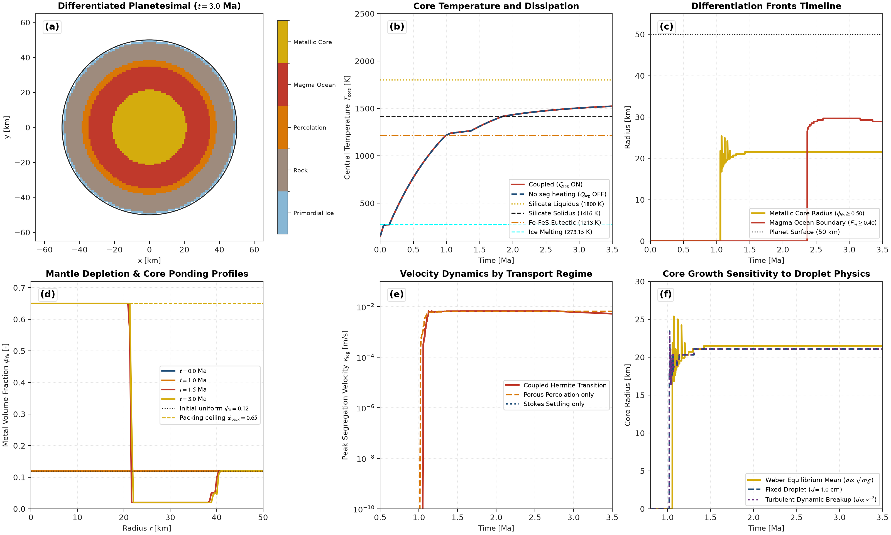
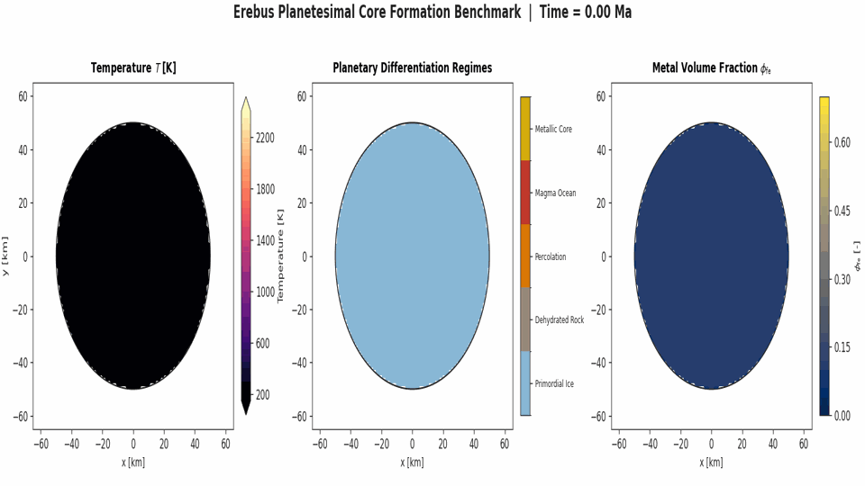
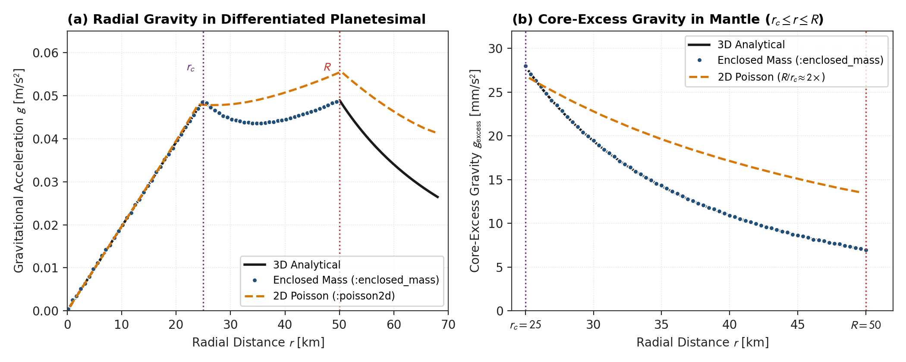

Iron Core Formation and Metal-Silicate Segregation
This page documents the physical formulation, mathematical limits, and numerical implementation of iron core formation in Erebus.jl. The model couples porous Fe-FeS percolation through solid silicate matrices, Stokes droplet settling through silicate magma oceans, segregation dissipation heating, and mass-conservative transport.
1. Physical Motivation
Early planetary differentiation separates dense metallic iron from lighter silicate rock to form a central metallic core and an overlying silicate mantle. In early Solar System planetesimals, this differentiation is driven by internal decay heating from short-lived radionuclides ($^{26}\text{Al}$ and $^{60}\text{Fe}$).
Iron-nickel-sulfur metal starts melting at $T_{\text{eutectic}} \approx 1213\text{ K}$ (lowered below the $\sim 1261\text{ K}$ pure Fe-FeS eutectic by Ni, P, and C), below the silicate solidus ($T_{\text{solidus}} \approx 1400\text{ K}$). Metal-silicate segregation spans three transport intervals:
- Porous Percolation Regime ($F_m < 0.40$): In crystalline silicate rock, liquid Fe-FeS melt percolates along mineral grain boundaries under gravity once the liquid metal fraction exceeds the percolation threshold ($\phi_{\text{crit,perc}} \approx 0.05$). Porous Darcy dynamics with Kozeny-Carman permeability govern the flow.
- Transition Mush Zone ($0.40 \le F_m \le 0.50$): Segregation velocity blends porous percolation with droplet settling between
F_settle_start($0.40$) andF_perc_end($0.50$). Separately, above[melting] phi_crit(default $0.40$), silicate viscosity transitions smoothly into a crystal-suspension regime. - Magma Ocean Stokes Settling Regime ($F_m > 0.50$): Above $F_{\text{perc\_end}}$, metal moves by droplet settling alone. Dense liquid metal emulsifies into droplets whose diameter follows capillary-hydrodynamic balance, and droplets sink through the magma suspension following Stokes drag with hindered-settling corrections.
Segregation also updates thermal energy and bulk cell properties:
- Dissipation Energetics: Sinking metal releases gravitational potential energy as frictional heat, though in a 50 km body this heat is small relative to $^{26}\text{Al}$ heating.
- Property Blending: Bulk density, thermal conductivity, and volumetric heat capacity update dynamically in space as metal migrates toward the planetary center.
2. Theoretical Formulation
The physical theory, chemical equation of state models (Sanloup et al., 2000; Morard et al., 2014), permeability relations, and droplet breakup mechanics are derived in detail in Iron Core Formation and Metal Segregation.
Key constitutive formulations validated on this page include:
Mobile Metal Volume Fraction ($\phi_m$): $\phi_m = F_{\text{fe}}(T) \cdot X_{\text{fe,bulk}}, \quad F_{\text{fe}}(T) = \text{clamp}\left(\frac{T - T_{\text{eutectic}}}{\Delta T_{\text{metal}}}, 0, 1\right)$
Porous Darcy Percolation Velocity ($v_{\text{perc}}$): $v_{\text{perc}} = \frac{k_{\text{metal}}(\phi_m)}{\phi_m \, \eta_{\text{metal}}} \Delta\rho \, g$
Magma Ocean Stokes Settling Velocity ($v_{\text{settle}}$): $v_{\text{settle}} = v_{\text{stokes}} \, h(\phi_m), \quad v_{\text{stokes}} = \frac{2}{9} \frac{\Delta\rho \, g \, r_{\text{drop}}^2}{\eta_{\text{susp}}} C_{\text{HR}}$ where $\eta_{\text{susp}}$ blends exponential melt weakening below $\phi_{\text{crit}}$ smoothly into the crystal-suspension law (Roscoe, 1952; Solomatov, 2015) and $\Delta\rho = \rho_{\text{metal}} - \rho_{\text{sil,eff}}$.
Continuous Hermite Handover ($v_{\text{seg}}$): Smooth $C^1$ transition over the interval $F_m \in [F_{\text{settle\_start}}, F_{\text{perc\_end}}]$: $v_{\text{seg}} = (1 - \xi) v_{\text{perc}} + \xi v_{\text{settle}}, \quad \xi = 3s^2 - 2s^3$ where $s = (F_m - F_{\text{settle\_start}}) / (F_{\text{perc\_end}} - F_{\text{settle\_start}})$.
Gravitational Dissipation and Counterflow Sensible Heat ($Q_{\text{seg}}$): $Q_{\text{seg}} = \Delta\rho \, g \, J_{\text{realized}} + Q_{\text{sens}}$
where $J_{\text{realized}}$ is the realized face volume flux density over active substeps and $Q_{\text{sens}}$ balances subcycle two-phase enthalpy counterflow between settling metal and rising silicate.
Volume-Weighted Material Property Blending: $\rho = (1 - X_{\text{fe}}) \rho_{\text{silicate}} + X_{\text{fe}} \rho_{\text{metal}}$ $\rho c_p = (1 - X_{\text{fe}}) (\rho c_p)_{\text{silicate}} + X_{\text{fe}} (\rho c_p)_{\text{metal}}$ $k = (1 - X_{\text{fe}}) k_{\text{silicate}} + X_{\text{fe}} k_{\text{metal}}$
3. Discretization and Mass Conservation
Metal segregation is solved on the Eulerian grid using a finite-volume drift-flux formulation.
Local CFL Subcycling
The Stokes-Darcy hydrodynamic timestep $\Delta t_{\text{hydro}}$ is governed by silicate convection and thermal diffusion ($\sim 10^3\text{ yr}$). Explicit stability uses the characteristic speed $v_{\text{char}} = \max(v_{\text{seg}}, |\partial q/\partial \phi_m|)$ at each active face, where $q$ is the metal flux. Each adaptive substep satisfies $\Delta t_{\text{sub}} \le \Delta t_{\text{CFL}}$, and at most max_subcycles substeps execute per outer step:
\[\Delta t_{\text{CFL}} = \text{cfl\_settling} \cdot \frac{\min(\Delta x, \Delta y)}{\max_{\text{active faces}} v_{\text{char}}}\]
Multi-Dimensional Flux Limiters and Marker Capacity Redistribution
To guarantee strict non-negativity and prevent exceeding maximum packing fraction $\phi_{\text{pack}}$ on 2D staggered grids:
- Outflow Limiter: For cell $(i, j)$ donating metal through horizontal and vertical faces, total face outflow $Out_{\text{total}} = \sum \Phi_{\text{out}} \Delta t_{\text{sub}}$ must not exceed available metal mass $m_{\text{avail}}$. All outward fluxes are scaled by $\alpha_{\text{out}} = \min(1.0, m_{\text{avail}} / Out_{\text{total}})$.
- Inflow Limiter: Total incoming flux $In_{\text{total}} = \sum \Phi_{\text{in}} \Delta t_{\text{sub}}$ must not exceed available 3D volume-weighted metal capacity $m_{\text{cap}} = \sum_{m \in \text{cell}} \max(0, \phi_{\text{pack}} - X_{\text{fe,bulk}}[m]) w_{3\text{D},m}$. All inward fluxes are scaled by $\alpha_{\text{in}} = \min(1.0, m_{\text{cap}} / In_{\text{total}})$.
- Capacity-Weighted Marker Update: When net cell mass changes are distributed back to markers, markers in cells gaining metal receive increments proportional to their remaining room below $\phi_{\text{pack}}$. Markers in cells losing metal scale proportionally to their molten metal fraction $X_{\text{fem}}$, keeping solid metal fixed. This guarantees that individual markers never violate $[0, \phi_{\text{pack}}]$, even with non-uniform initial distributions.
Machine-Precision Conservation
Provided all initial marker bulk metal fractions satisfy $0 \le X_{\text{fe,bulk}} \le \phi_{\text{pack}}$, after subcycled finite-volume transport, any floating-point truncation residual is corrected via a uniform, bounded mass correction over eligible interior planet markers below the packing ceiling $\phi_{\text{pack}}$. The global relative mass error satisfies:
\[\frac{|M_{\text{metal}}(t) - M_{\text{metal}}(0)|}{M_{\text{metal}}(0)} < 10^{-12}\]
in the drift-flux solver, and $< 10^{-10}$ in coupled multi-physics simulation loops.
4. Planetesimal Core Formation Benchmark Suite
The core formation benchmark configuration (configs/core_formation_benchmark.toml) simulates a 50 km radius planetesimal initialized at $2.25\text{ Ma}$ with preheated interior rock at $1350\text{ K}$ and bulk metal volume fraction $X_{\text{fe,bulk}} = 0.20$. The benchmark runs 5 timesteps ($\sim 16\text{ kyr}$) to verify dynamic metal segregation, local CFL subcycling, and conservative marker updates under coupled thermo-hydro-mechanical evolution.
Physical Differentiation Timeline
The planetesimal differentiates in four sequential stages driven by $^{26}\text{Al}$ radioactive decay in the rock component:
- Primordial Homogeneous Accretion ($t = 0\text{ Ma}$): The body starts completely cold ($T = 150\text{ K}$) and uniformly icy throughout its entire volume.
- Pore Ice Melting and Rock Desiccation ($t \approx 0.3 - 0.8\text{ Ma}$): Radioactive decay warms the interior above 273.15 K. Pore ice melts in the interior and dehydrates the rock, while surface conductive cooling maintains a cold outer lid ($T < 273.15\text{ K}$) where primordial ice is preserved dynamically.
- Porous Fe-FeS Percolation ($t \approx 1.0 - 1.4\text{ Ma}$): Interior temperatures reach the Fe-FeS eutectic ($T_{\text{eutectic}} = 1213\text{ K}$). Molten metallic alloy exceeds the percolation threshold ($\phi_{\text{crit,perc}} = 0.05$) and drains inward through crystalline silicate pores.
- Magma Ocean Stokes Settling and Core Ponding ($t \approx 1.5 - 3.5\text{ Ma}$): Silicate melting crosses the solidus ($1400\text{ K}$) and reaches the settling onset ($F_{\text{settle\_start}} = 0.40$). Dense liquid metal droplets settle rapidly through the low-viscosity magma suspension. Droplets pond at the planetary center to form a segregated metallic core of radius $\approx 27\text{ km}$ at maximum packing ($\phi_{\text{pack}} = 0.65$), capped by an iron-depleted silicate mantle ($\phi_{\text{fe}} = 0.02$) and an outer primordial icy crust.
Benchmark Results
The multi-panel summary figure illustrates the critical physical mechanisms:

Figure 1: Class B (1D Finite-Difference Benchmark Solver): Multi-panel verification benchmark for iron core formation and metal-silicate segregation. The model executes a 1D spherical finite-difference solver in Julia (generate_core_formation_benchmarks.jl) mapped radially onto a 2D mesh in Python (generate_core_formation_benchmark.py). Automated 2D solver verification is executed in test/test_core_formation.jl. (a) Revolved differentiated body map ($t = 3.0\text{ Ma}$) showing the segregated central iron core (gold), surrounded by an iron-depleted silicate mantle (red), and preserved cold primordial crust (blue). (b) Core temperature: central temperature evolution $T_{\text{core}}(t)$ comparing cases with and without gravitational dissipation heating ($Q_{\text{seg}}$). (c) Differentiation fronts timeline: radial expansion of the metallic core boundary and the magma ocean boundary. (d) Radial metal concentration profiles $\phi_{\text{fe}}(r)$ across evolution epochs. (e) Transport regime comparison: segregation velocities for percolation only, Stokes settling only, and the coupled Hermite transition model. (f) Droplet size physics sensitivity: core radius growth for constant diameter, Weber balance, and turbulent breakup.
Revolved Simulation Animation
The animation below displays the 1D spherical core formation benchmark revolved into 2D Cartesian frames over 3.5 Ma starting from a completely uniform icy mixture. The panels display internal temperature with phase boundaries (left), compositional differentiation regimes (center), and bulk metal volume fraction $\phi_{\text{fe}}$ (right).

Figure 2: Class B (1D Finite-Difference Benchmark Solver): Revolved 1D spherical finite-difference simulation frames over 3.5 Ma of planetesimal evolution, displaying temperature, differentiation regimes, and metal volume fraction.
A high-framerate MP4 video is available at ../../assets/core_formation_differentiation.mp4.
Self-Gravity in Differentiated Bodies (:poisson2d vs :enclosed_mass)
To validate self-gravitational acceleration in differentiated planetesimals, Erebus.jl compares the 2D Cartesian Poisson solver against the 3D enclosed-mass formulation on a two-layer planetesimal ($R = 50\text{ km}$, $r_c = 25\text{ km}$, $\rho_c = 7000\text{ kg/m}^3$, $\rho_m = 3000\text{ kg/m}^3$):

Figure 3: Class B (Julia Library Exporter): Self-gravity acceleration and core-excess comparisons for a differentiated planetesimal ($R = 50\text{ km}$, $r_c = 25\text{ km}$, $\rho_c = 7000\text{ kg/m}^3$, $\rho_m = 3000\text{ kg/m}^3$) evaluated by benchmarks/export_gravity_two_layer_benchmark.jl. (a) Total radial acceleration $g(r)$ comparing the 3D analytical solution, the discrete marker enclosed-mass mode (:enclosed_mass), and the 2D Cartesian Poisson mode (:poisson2d). (b) Core-excess gravity anomaly $g_{\text{excess}}(r)$ outside the core ($r_c \le r \le R$).
- Analytical 3D Spherical Profile: Outside the central core ($r \ge r_c$), true 3D spherical gravity follows: $g_{3D}(r) = \frac{4}{3} \pi G \left[ \rho_m r + (\rho_c - \rho_m) \frac{r_c^3}{r^2} \right]$ The 3D enclosed-mass mode (
geometry.gravity_mode = :enclosed_mass) reproduces the analytical profile to within 0.21% across the mantle, with a surface relative error of 0.036%. - 2D Poisson Distortion: Under
:poisson2d, the cylindrical Green's function causes the core-excess gravity $g_{\text{excess}}(r) = g(r) - (4/3) \pi G \rho_m r$ to fall off as $1/r$ instead of $1/r^2$. At the planet surface $r = R$, the continuum analytical limit overpredicts the core-excess anomaly by a factor of: $\frac{g_{\text{excess, poisson2d}}(R)}{g_{\text{excess, 3D}}(R)} \approx \frac{R}{r_c} = 2.0$ (1.92 on the discrete $65 \times 65$ grid due to domain boundary Dirichlet grounding) and increases total surface gravity by 14.3% (13.2% on grid). The enclosed-mass formulation removes this cylindrical artifact.
5. Validation and Provenance Summary
| Attribute | Specification |
|---|---|
| Target Physics / Diagnostic | Porous Fe-FeS percolation, Stokes droplet settling, mush transition handover, dissipation heating, and self-gravity in differentiated bodies |
| Reference Standard | Rubie et al. (2015); Monteux et al. (2009); Lichtenberg et al. (2019) |
| Figure Provenance | Class B (1D Finite-Difference Benchmark Solver / Julia Library Exporter) |
| Generating Script | benchmarks/generate_core_formation_benchmarks.jl, benchmarks/render_core_formation_movie.py, benchmarks/export_gravity_two_layer_benchmark.jl |
| Automated Verification Test | test/test_core_formation.jl, test/test_reference_runs.jl |
| Quantitative Tolerance | Analytical 1D gravity $L_2 < 1.0\times 10^{-4}$; core metal conservation closed to machine precision $< 10^{-12}$ |
6. Literature Anchors
Full citation details and DOI links for the core-formation and suspension-rheology studies referenced on this page are listed in the Bibliography and Citations:
- Permeable percolation and magma-ocean core formation physics: Yoshino et al. (2003), Rubie et al. (2003), Rubie et al. (2015), and Lichtenberg et al. (2019).
- Gravitational heating and turbulent droplet emulsification: Monteux et al. (2009), Deguen et al. (2011), Deguen et al. (2014), and Taylor (1934).
- Suspension viscosity, hindered settling, and Fe-S alloy equations of state: Roscoe (1952), Richardson and Zaki (1954), Solomatov (2015), Sanloup et al. (2000), and Morard et al. (2014).